GitHub for Collaboration
Git for Scientists
Lars Schöbitz
Invalid Date
Welcome!
Meet the lecturer
Lars Schöbitz

- Environmental Engineer
- Retired researcher
- RStudio certified instructor
- Data steward at ETHZ
Your turn
Think about the last time you published a written document:
- Which tasks gave you joy?
- Which tasks were challenging or frustrating?
Take some written notes.
What this day is, and is not
- Today is the Git and GitHub foundation for collaboration: create, clone, commit, push, branch, pull request, review, merge.
- Today is not an AI workshop. Working with AI coding agents builds on exactly these skills; that is the follow-up workshop.
- It is safe to fail here. Everything we do today is reversible, and breaking things is part of the plan.
- Git and GitHub -> what we learn today
- Quarto and R -> you will see them, not learn them
- RStudio IDE -> our interface, could also be VS Code, Positron IDE, GitHub Desktop, and others
Meeting you where you are
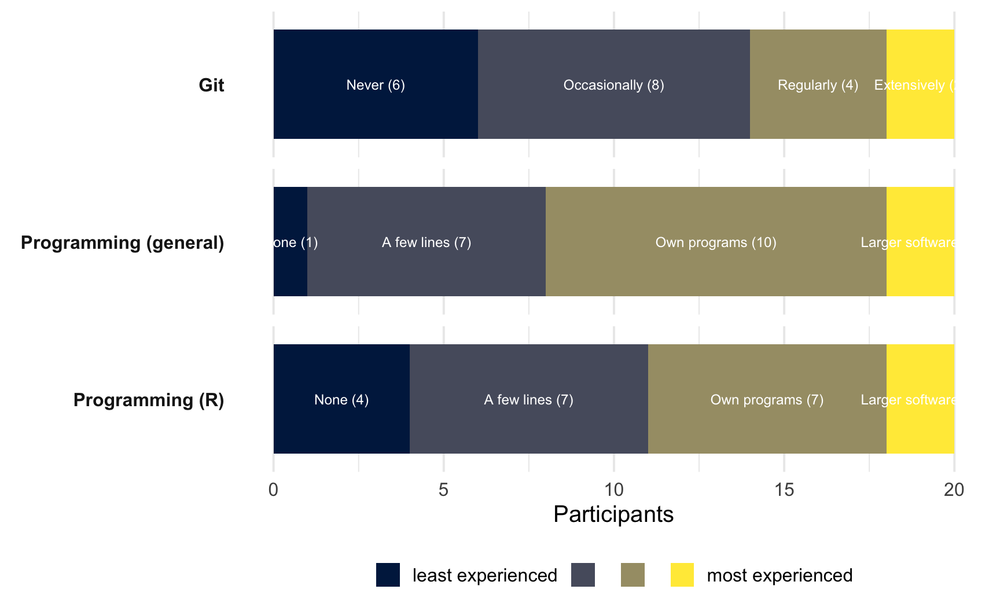
Self-reported experience across the cohort (pre-course survey, n = 20).
What you want to learn
From your pre-course survey (n = 20), three groups:
- Covered directly today: use Git without fear, the full commit cycle, branching, and collaborating and reviewing through pull requests.
- Partially covered: resolving merge conflicts, rebasing, staging in a systematic way. We build the foundation; the advanced moves are a natural next step.
- The follow-up workshop: Git together with AI coding agents. Roughly half of you asked for this. Today is the Git foundation that makes it possible.
Meet Arti
This room is diverse, and the pre-course survey shows it. For some of you the interface is entirely new; some of you are very experienced. I designed for three personas (Arti, Bianca, Cem). My focus learner is Arti.
- Background: environmental-science post-doc, works in English, in a group of mixed Git fluency.
- Knows: short R scripts; lives in Google Docs, Word, and email; versions files by hand; reaches for Excel over CSV. Tried Git once, an error stopped them cold.
- Wants: to collaborate confidently, and to see that clicking push is
git push. - Needs: a safe-to-fail room. Almost everything in Git is reversible.
Course structure
- My turn: Lecture segments + live coding
- Your turn: Individual or 2-people team exercises (in break-out rooms on Zoom)
Course icons
Two icons tell you where a step happens:
- in the RStudio IDE, on your own machine
- on GitHub, in the browser
Watch for these on every “Your turn” slide.
Learning objectives
By the end of this workshop, you will be able to:
Create and clone a repository, and run the full pull, stage, commit, push cycle from the RStudio IDE, including reverting a commit.
Create a branch and open a pull request, review a colleague’s pull request, and merge it after review.
Draw a concept map of how Git and GitHub fit together.
Schedule
| Time | Module |
|---|---|
| 09:30 - 10:00 | Arrival and setup check |
| 10:00 - 10:30 | B1: Welcome, concept-map intro, baseline map |
| 10:30 - 11:00 | B2: Create and clone (website repo) |
| 11:00 - 11:15 | Break |
| 11:15 - 11:45 | B3: The commit cycle (website repo) |
| 11:45 - 12:15 | B4: Collaboration cliffhanger (partner clone, push fails) |
| 12:15 - 13:00 | Lunch |
| 13:00 - 13:30 | B5: Branch (manuscript repo) |
| 13:30 - 14:05 | B6: Pull request, review, merge |
| 14:05 - 14:15 | B7: Publish |
| 14:15 - 14:30 | B8: Concept map revisit and wrap-up |
Concept maps
Concept maps
A concept map is things (nodes) joined by labelled arrows, where every label is a verb.

Your turn: your baseline map
How does a document you write reach your co-author and come back? Draw it as a concept map.
- Things as nodes, arrows with verb labels.
- There is no wrong map; this one is yours.
- Keep the map. You will need it again at the end of the day.
In the room: place the yellow sticky note on your laptop when your map is done.
On Zoom: write “done” in the chat.
Create and clone
Arti’s project
Arti (before)
- starts a new folder on her laptop
- adds data as
.xlsx - adds a
.docxreport - adds an R script
Arti (after)
- creates a repository on GitHub
- clones it and opens an RStudio project
- adds data as
.csv - adds a Quarto document and an R script
My turn
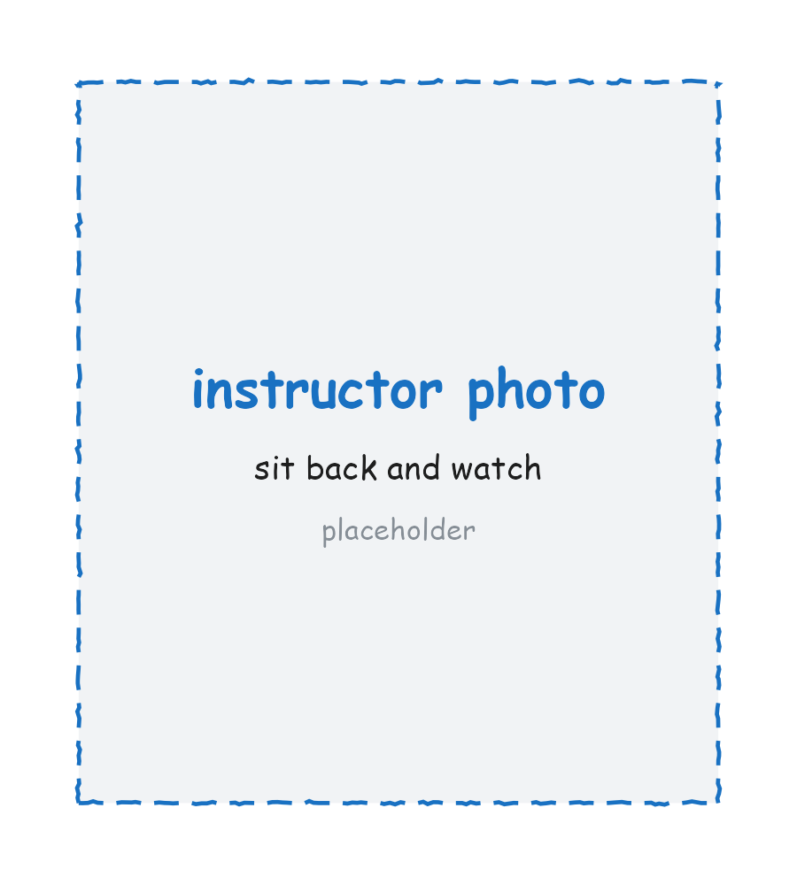
Sit back and watch.
Note down any questions as they come up. We pick them up right after.
Your turn
On github.com
- Create a repository called
website, public, with a README (so the clone is never empty).
In RStudio
- Set two options once (Tools > Global Options): General > never save
.RDataon exit; Code > use the native pipe|>. - Clone: File > New Project > Version Control > Git, paste the HTTPS URL, create the project inside your
gitreposfolder. - Find
.gitignoreandwebsite.Rprojin the Git tab with their yellow ? icons.
In the room: place the yellow sticky note on your laptop when you see the two yellow ? icons.
On Zoom: write “done” in the chat.
Our turn
Together, in your new website repository:
On github.com
- Edit
README.mdand commit the change (the pencil icon, then “Commit changes”). - Add a file inside a new folder (Add file > Create new file, type
data/notes.md).
Place the yellow sticky note on your laptop when your commit shows in the repository.
Local and remote
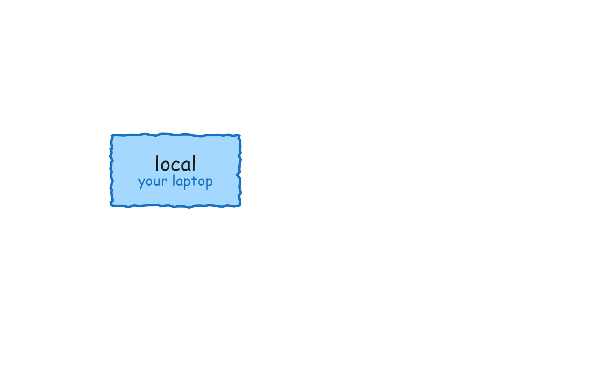
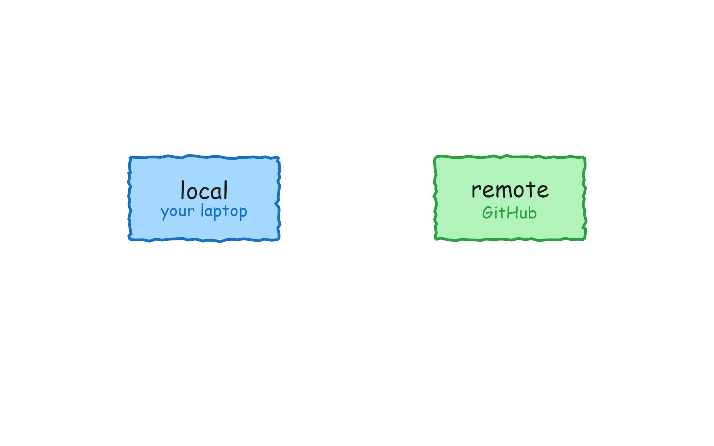
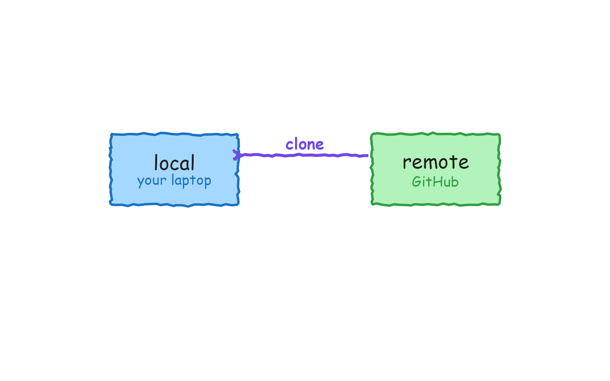
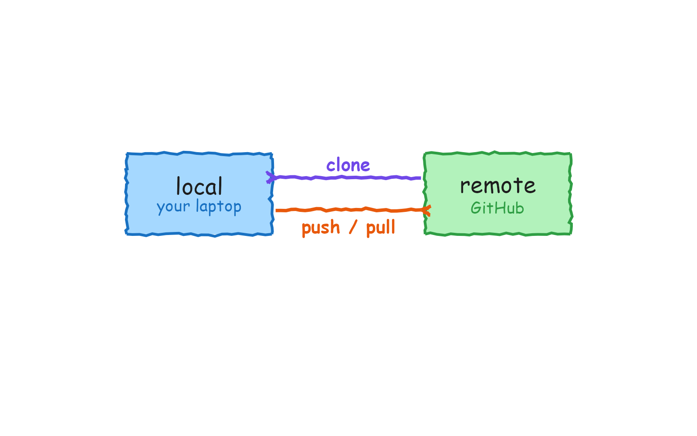
Anything from creating and cloning you’d like clarified before the break?
Take a break
Please get up and move!
Image generated with DALL-E 3 by OpenAI
The commit cycle
A button is a command
- RStudio is a GUI, a graphical user interface.
- When you click Pull in the Git tab, RStudio runs
git pullfor you. - Every button we use today is a Git command underneath. Clicking it is not a lesser path.
Arti’s commit
Arti (before)
- opens a
.docx - edits the text
- the file autosaves
Arti (after)
- opens a Quarto file
- edits the text, it autosaves
- after meaningful changes: pull, stage, commit, push
- the commit message says what changed and why
My turn
Sit back and watch.
Note down any questions as they come up. We pick them up right after.
Your turn
The cycle, always in this order: Pull, Stage, Commit, Push (PSCP).
In RStudio
- Edit your
README.md: describe your website in one sentence. Save, and spot the blue M in the Git tab. - Run the full cycle: Pull, Stage, Commit (a message that says what changed), Push.
On github.com
- Open your repository and find your commit message and your change.
In the room: place the yellow sticky note on your laptop when you can see your commit on GitHub.
On Zoom: write “done” in the chat.
The commit cycle
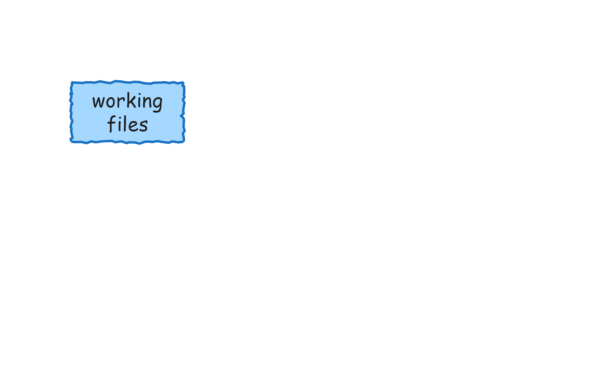
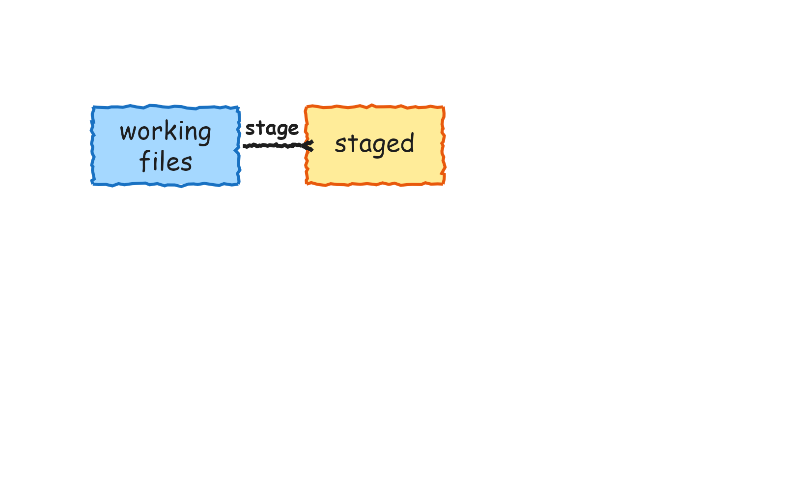
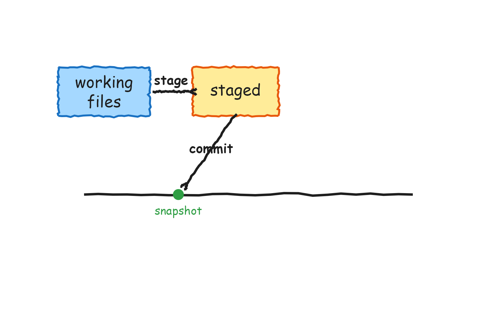
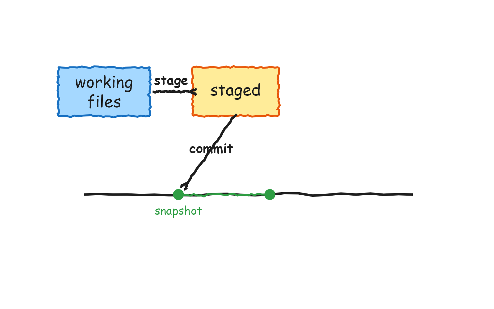
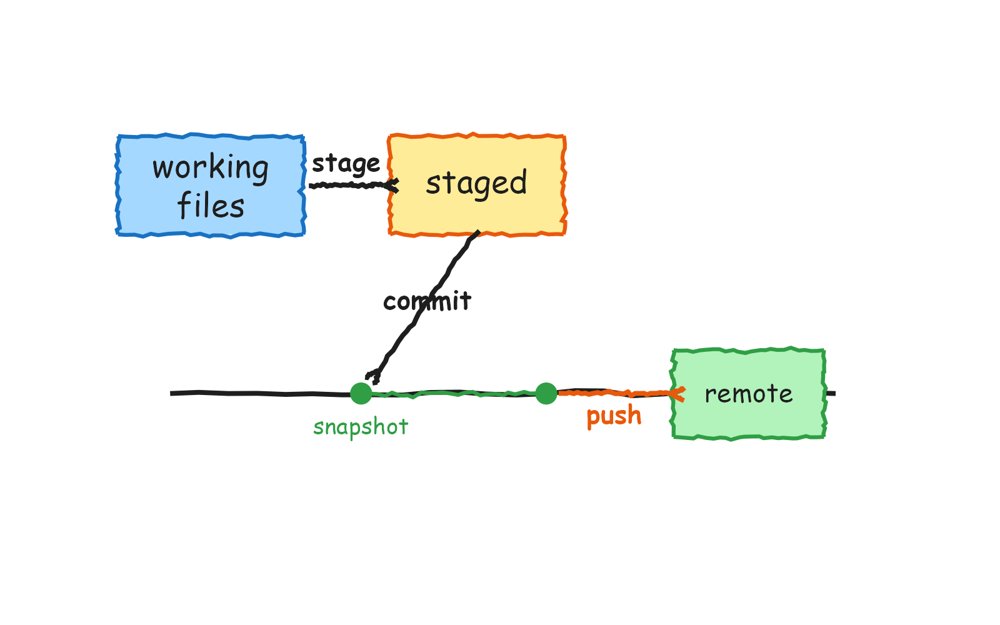
Anything from the commit cycle you’d like clarified before we move on?
Team work
Arti joins a team
Arti (before)
- opens SharePoint
- finds Cem’s file
- edits it in track changes
- emails Cem to say it is done
Arti (after)
- opens the project in RStudio
- opens the Quarto file, edits
- runs the PSCP mantra
- and gets blocked
Find your partner
- You are in a pair with the partner you were told about before today.
- Write each other’s GitHub username on your sticky notes.
- Keep that sticky note. Your partner returns after lunch.
Your turn
On github.com
- Browse to
github.com/USERNAME, where USERNAME is your partner’s username.
In RStudio
- Clone their
websiterepository (Code button, HTTPS URL, File > New Project > Version Control > Git). - Edit the README: add “This repo contains a personal website for USERNAME.”
- Run the mantra: Pull, Stage, Commit, Push.
What happens?
In the room: place the yellow sticky note on your laptop when something unexpected happens.
On Zoom: write “blocked” in the chat.
What just happened?
- Your push failed: you can read their repository, but you have no write access.
- Giving everyone write access (“collaborator”) exists, but it does not scale, and it means anyone can change anything at any time.
- So how do teams actually propose and review changes? That is exactly what we solve after lunch: branches and pull requests.
Match the Git command to the button
A one-page handout: draw a line from each Git command to the button that runs it in RStudio or on GitHub.
- 3 minutes on your own.
- 5 minutes comparing with your partner.
- The point: clicking a button runs the same command a terminal user types.
Lunch
The afternoon starts hands-on, and your partner is waiting for you.
Branch
Arti’s branch
Arti (before)
- one shared file
- everyone edits the same copy
- changes collide
Arti (after)
- creates a branch for her work
- edits safely, away from
main - her changes wait until the team is ready to bring them in
My turn
Sit back and watch.
Note down any questions as they come up. We pick them up right after.
Your turn
Your team shares one manuscript repository, washinvestments-<team> (for example washinvestments-red).
On github.com
- Find and clone your team’s
washinvestments-<team>repository (org page, search your team name).
In RStudio (one person drives)
- Git pane: New Branch, name it
dev. - In
index.qmd: put in your own author details in one of the two author slots. Render. - Run the mantra: Pull, Stage, Commit, Push with the message “update author details”.
In the room: place the yellow sticky note on your laptop when your push has finished.
On Zoom: write “done” in the chat.
Branching
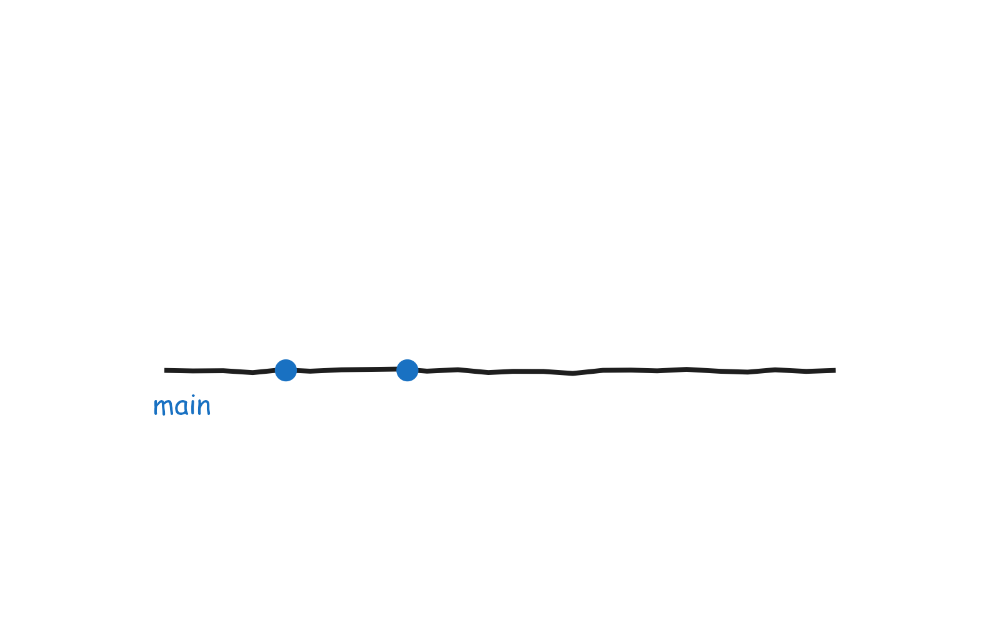
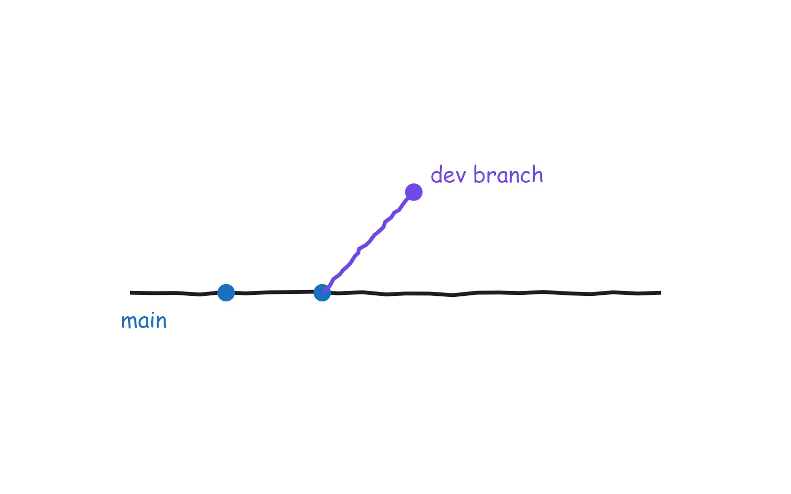
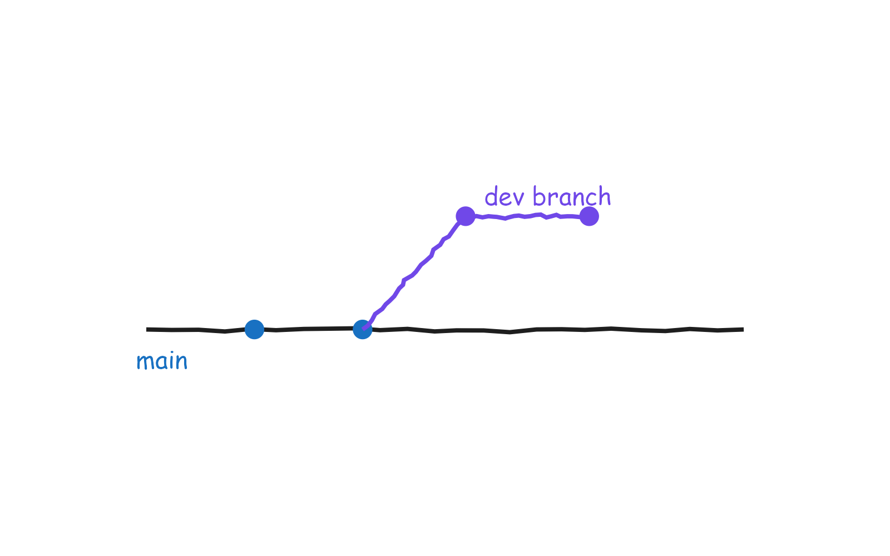
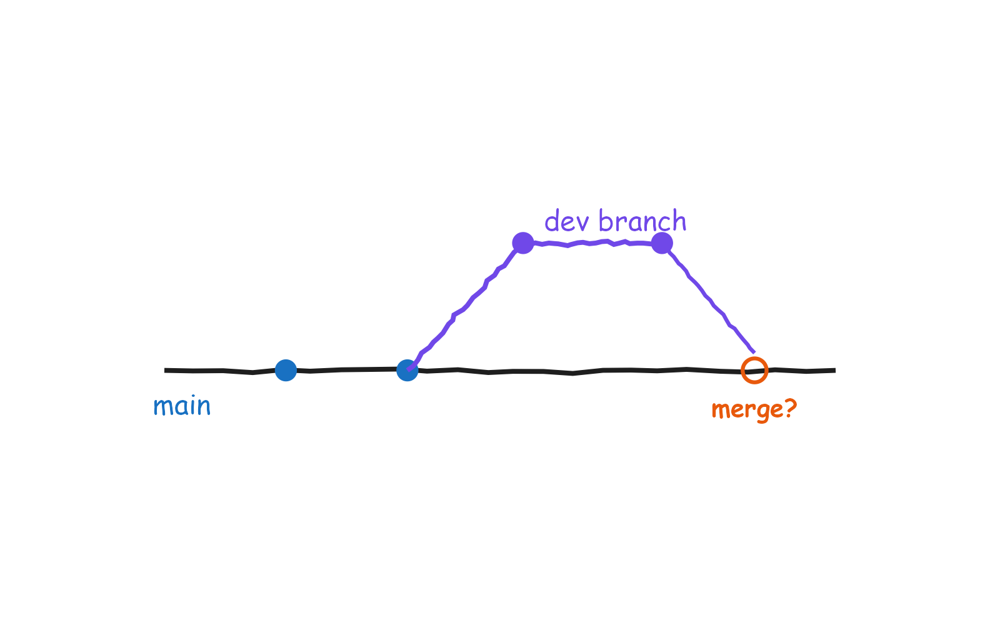
Pull request, review, merge
Arti’s review
Arti (before)
- emails the file back and forth
- comments live in track changes
- no record of who changed what, when
Arti (after)
- opens a pull request
- her partner leaves line comments
- the change is merged after review, with a full record
My turn
Sit back and watch.
Note down any questions as they come up. We pick them up right after.
Your turn
On github.com
- Open a pull request from your
devbranch. Title it so your reviewer knows what changed. - Request a review from your partner (the username on your sticky note).
- Review your partner’s pull request: at least one line comment, then submit the review.
- After your review arrives: merge the PR, confirm.
In RStudio
- Switch to
main, Pull, and switch back todev.
Partner not ready? Review the seed PR in your team repository instead. Nobody waits on anybody.
In the room: place the yellow sticky note on your laptop after the switch back to dev.
On Zoom: write “done” in the chat.
The pull request
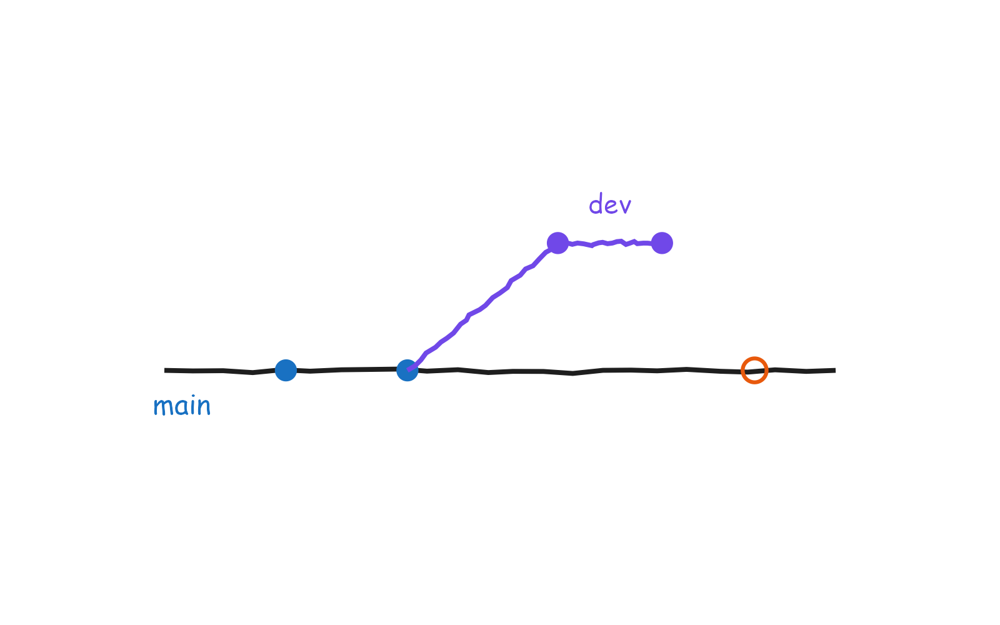
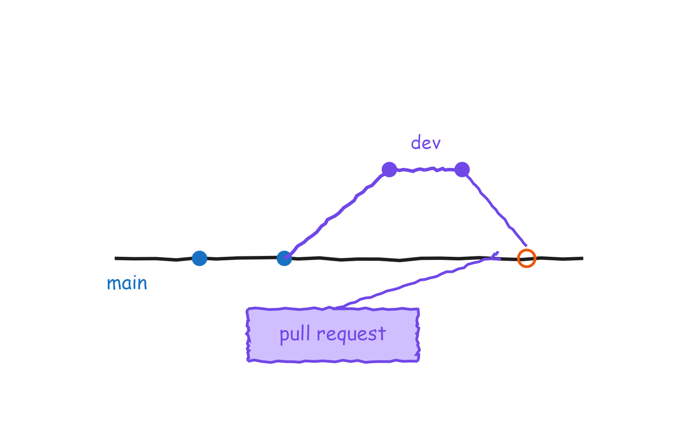
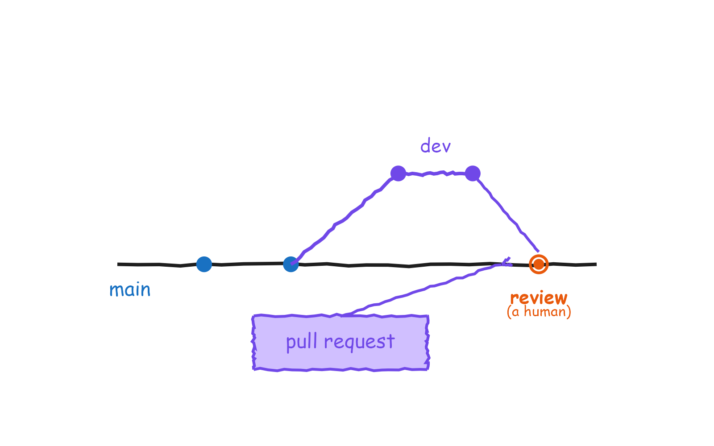
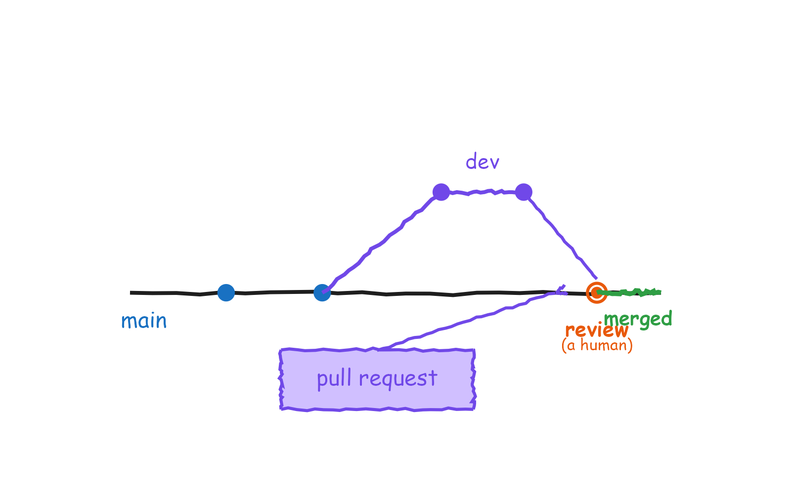
Concept map revisit and wrap-up
Your turn: your map, revisited
Draw a concept map of Git and GitHub as you understand them now.
- Use the words from today: repository, clone, commit, push, pull, branch, pull request, merge, review.
- Then put it next to your morning map and share both with your partner.
With your consent, I would like to photograph both maps (anonymously) to improve this workshop.
The day in one line
create , clone , commit , push , pull , branch , pull request , review , merge
What you also learned today
- RStudio, now with muscle memory
- Quarto: one document you can render
- Reversibility as a habit: commit early, revert without fear
What comes next
- Working with AI coding agents is the follow-up workshop, and it builds on exactly what you did today: branches, pull requests, review.
- Want a personal website? I offer a follow-up to build a one-page site with your profile links and bio.
- Interested in either? Email me and you will hear from me when dates are set.
- Start your first own project with Git and GitHub this week (already have a project? Read here).
- Keep learning by doing: open pull requests to yourself, review your own diffs.
Feedback, and thanks!
- Please fill in the post-course survey (link shared by email, 5 minutes, anonymous).
- Email me your open questions; I answer all of them this week.
All material is licensed under Creative Commons Attribution Share Alike 4.0 International.
Thanks!
Slides created via revealjs and Quarto: https://quarto.org/docs/presentations/revealjs/
Access slides as PDF on GitHub
All material is licensed under Creative Commons Attribution Share Alike 4.0 International.